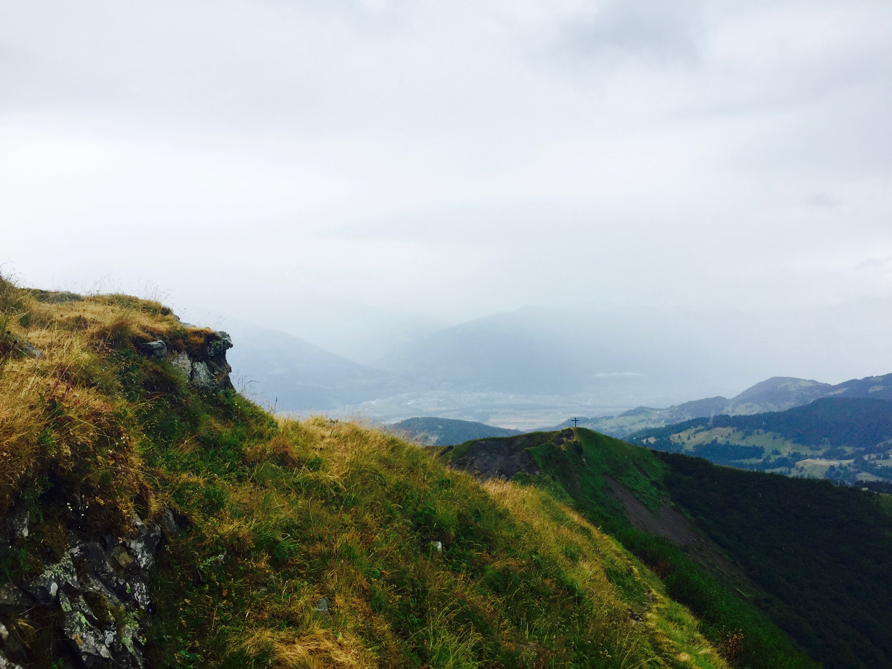

Profile
My name is Caroline Dres, and I am from Los Angeles, California. I am a sophomore at the College of Wooster majoring in computer science and minoring in mathematics. My other interests include French, art and graphic design. I also play soccer for the College of Wooster women’s soccer team and am secretary of P.U.S.H., an organization that works raise money and create awareness of adaptive sports for people with disabilities.
In terms of future career, I am very interested in entering the fields of graphic design and web development. I offer a variety of creative and technical skills and would say I work well in a collaborative setting. Lastly, I am competent, hardworking and pay close attention to detail.
Education
The College of Wooster is a liberal arts college and a member of the Colleges That Change Lives. It is regarded as one of the best colleges for mentored undergraduate research and is known especially for incorporating a senior independent study into its curriculum.
The Waldorf School education is based on the studies and educational philosophy of Rudolf Steiner. Waldorf school teaching and learning focuses on a hands-on approach. The curriculum involves a variety of art, music and movement because Steiner believed the incorporation of these elements in an academic setting fosters creative and analytic thinking.
Work
Qualifications and Technical Skills:
- Computer Science Major, College of Wooster (Aug 2015 to present);
- Profficient in programming languages: Python, C, C++;
- Experience with HTML and CSS;
- Proficient in Adobe Photoshop, Microsoft office;
Experience
Illumination Entertainment, Santa Monica CA (Summer 2016)
IT Intern: Assisted with setting up new workstations, maintenance of network systems and trouble- shooting software issues.
Radical Media, Santa Monica CA (Summer 2014)
Production Intern: Assisted with general office work for a major commercial production company.
Portfolio
Fine Arts
Horse Through Snowy Forest
Dandelion in Sunset
Fall Reflections

The Sun Will Rise

Fire and Ice

Desert or Lake
Photography

Vineyards of Vevey - Vevey, Switzerland

Vineyards Along Lake Geneva - Vevey, Switzerland
Horizon of Haute Provence - Simiane-la-Rotonde, France
Peaking Sunrays - Simiane-la-Rotonde, France
Streets of Altstadt Zug - Zug, Switzerland
Strangers in Paradise - Le Château De Nyon
Hiking in the Clouds - Swiss Alps

Misty Mountaintops - Swiss Apls
Overlook - Swiss Alps
Divine - Swiss Alps
Hawaiian Cliffside - Maui, Hawaii
Californian Cliffside - San Luis Obispo, California
Old Fashioned - San Francisco, California
Stacked - San Francisco, California
Digital Imaging

Distorted Portrait
Waterscene
Assemblage

Altered Landscape

Image 1 - Prevalence of Violence Project

Image 2 - Prevalence of Violence Project

Image 3 - Prevalence of Violence Project

Image 4 - Prevalence of Violence Project

Image 5 - Prevalence of Violence Project
Image 6 - Prevalence of Violence Project
Contact